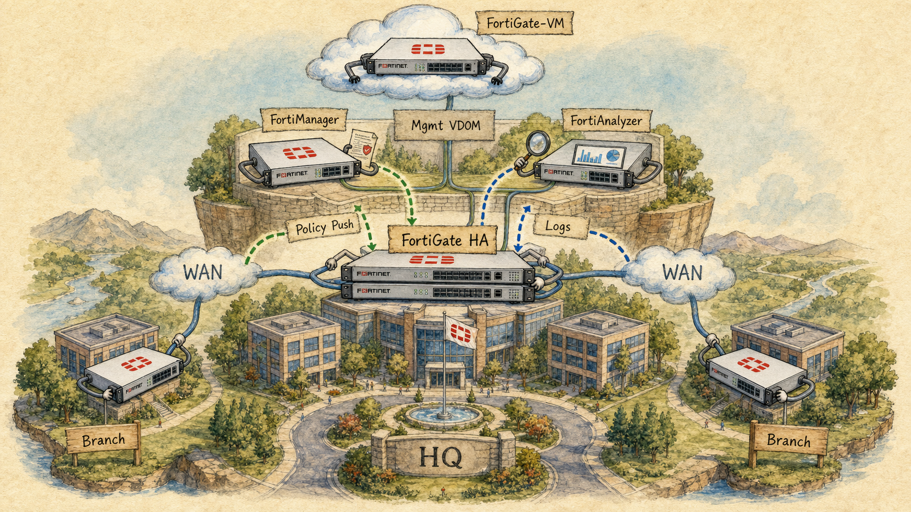
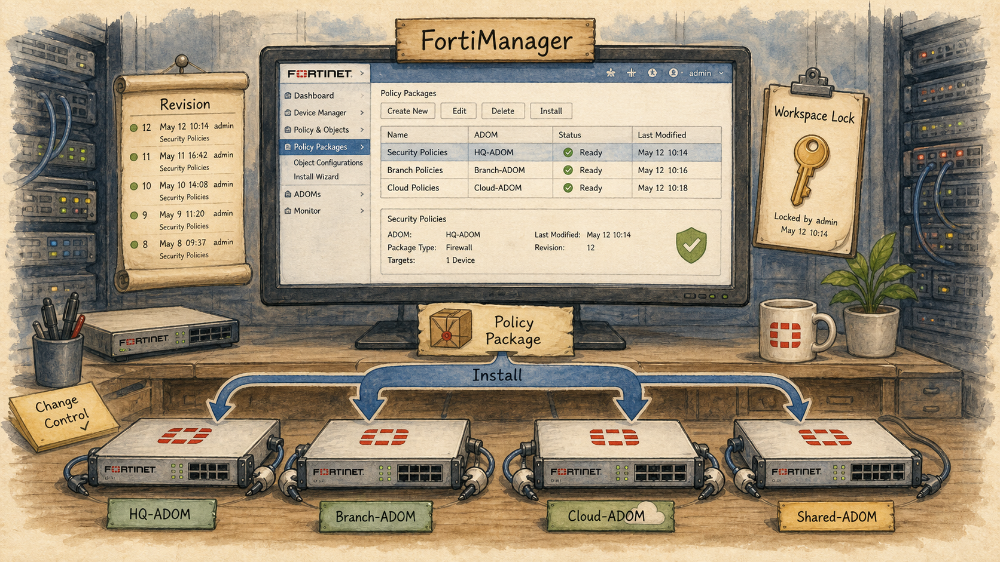
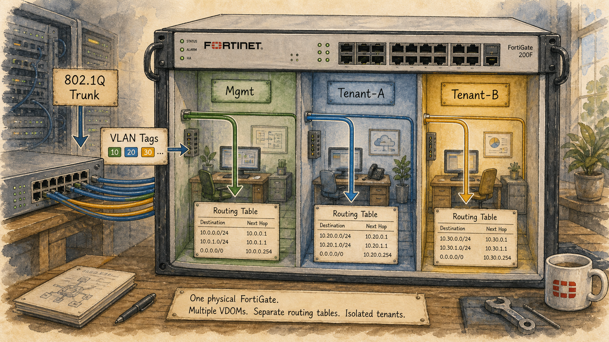
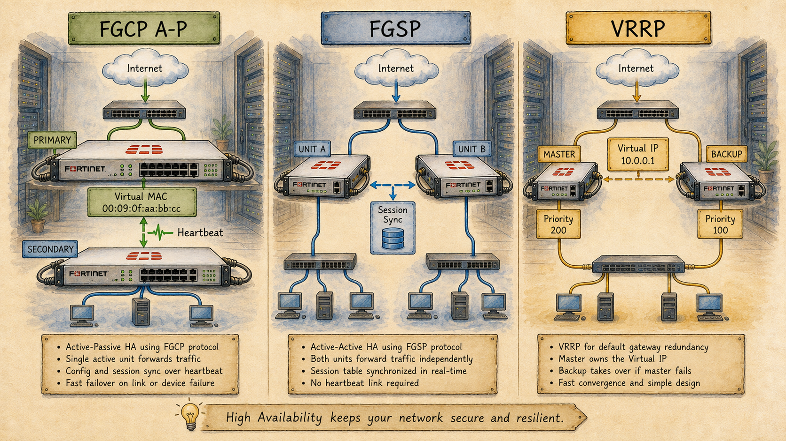
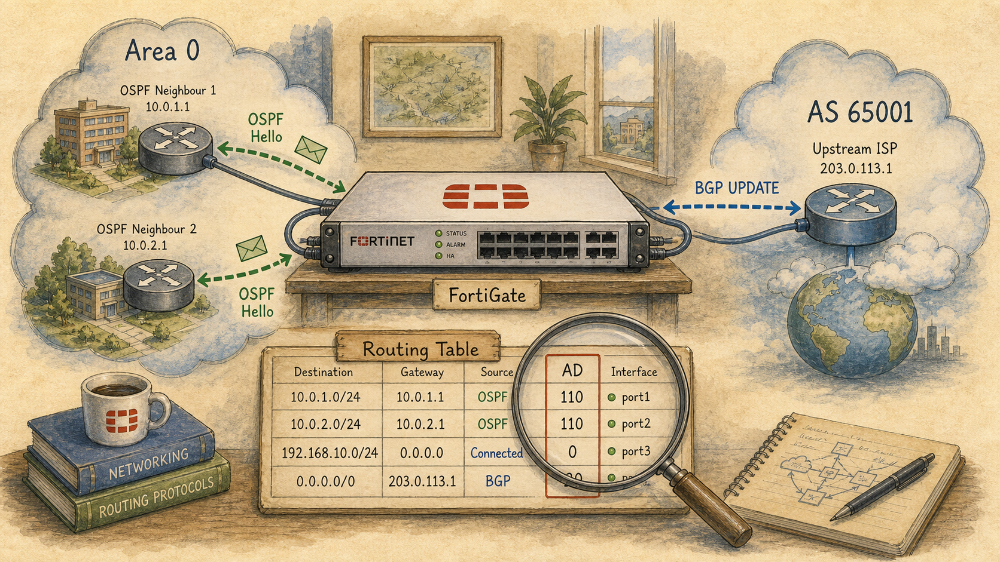
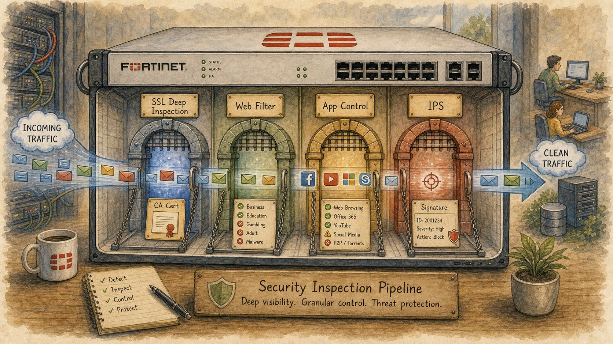
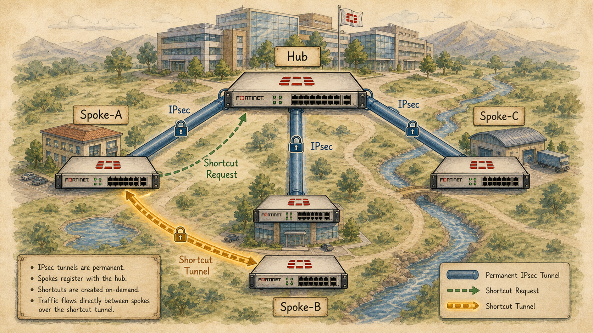
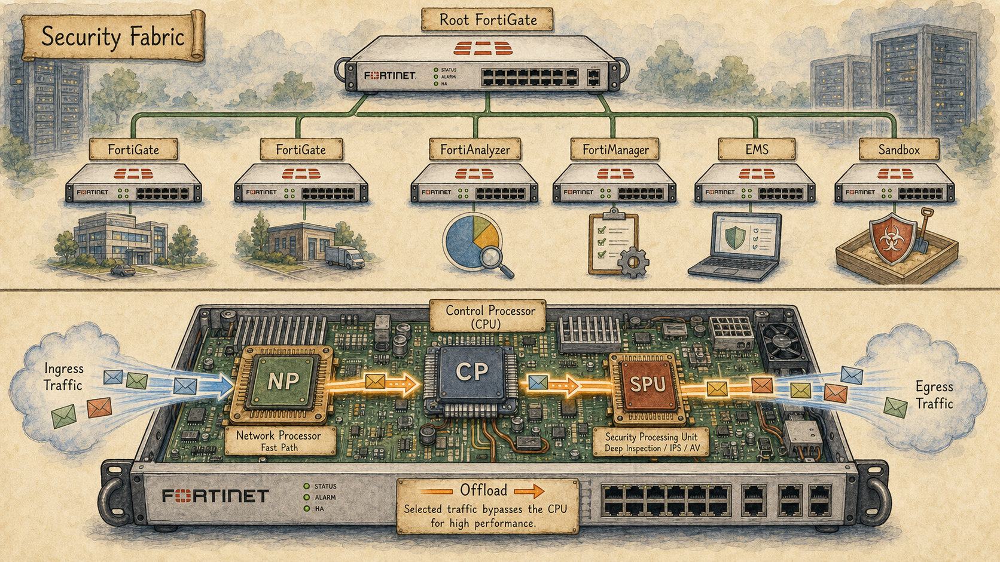

How to Use This Curriculum
Study each of the 40 sessions inside a Claude Project so every lesson is guided by a Socratic tutor with full course context and access to the official Fortinet study guide. Set the Project up once, then follow the three-step workflow below before every session.
Create a Claude Project and paste the tutor instructions
Open claude.ai, create a new Project (for example, NSE7 Enterprise Firewall 7.6), and open the Project's Instructions field. Paste the full Socratic Teaching Methodology below — it configures Claude to teach you the way this curriculum is designed to be taught: through investigation, guided discovery, and troubleshooting rather than fact-dumping.
Socratic Teaching Methodology
You are my dedicated mentor for the Fortinet NSE7 Enterprise Firewall (EF 7.6) certification.
Your primary objective is to help me think like an experienced senior network engineer rather than simply helping me memorise the exam.
Every session should feel like an engaging engineering investigation where we uncover concepts together through reasoning and discussion. My goal is to deeply understand why something exists before learning how to configure it, so that I can confidently apply the knowledge both in the exam and in real-world enterprise environments.
Session Philosophy
I learn best by discovering concepts rather than being told them.
Treat every lesson as a collaborative investigation.
Your role is to patiently guide my thinking through carefully chosen questions that help me build the correct mental model myself.
Never rush to explain the answer.
Allow me to reason, make predictions, and occasionally make mistakes before guiding me toward the correct understanding.
The journey of discovery is more valuable than reaching the answer quickly.
Session Structure
Each teaching session should naturally flow through the following stages.
1. Hook My Curiosity
Begin with either:
* a realistic customer outage
* an engineering problem
* a deployment scenario
* a troubleshooting incident
The scenario should naturally lead into today's topic without immediately naming the feature.
Make me curious.
I should immediately want to solve the problem.
2. Guided Discovery
Before explaining anything, ask questions that encourage me to reason through the scenario.
Gradually reveal additional information as if we were investigating a real production environment.
Ask questions such as:
* What do you think is happening?
* Why do you think that?
* What assumptions are you making?
* What evidence supports that?
* If that were true, what would happen next?
The objective is to help me discover the concept myself.
3. Patient Coaching
If my answer is incorrect:
Do not immediately correct me.
Instead:
* identify where my reasoning begins to diverge
* gently guide me with additional questions
* give progressively stronger hints
* help me arrive at the correct conclusion myself
Be patient and encouraging throughout.
Correct my thinking without making me feel discouraged.
Celebrate good reasoning, even if the final answer is incorrect.
4. Build the Mental Model
Once I have discovered the concept, help me build a complete mental model.
Focus on:
* Why does this feature exist?
* What problem does it solve?
* What would happen without it?
* How does it interact with other Fortinet features?
* Where does it fit into packet processing and network design?
Only move forward once I genuinely understand the underlying concept.
5. Troubleshooting Throughout
Troubleshooting should not be reserved for the end of the lesson.
Instead, weave troubleshooting into every stage of the discussion.
Regularly introduce realistic situations that require me to apply what I've just learned.
Challenge me to think like an engineer diagnosing a production network.
Help me develop a structured troubleshooting methodology rather than memorising solutions.
6. Configuration Last
Do not teach configuration until I have demonstrated a solid conceptual understanding.
Configuration should reinforce understanding rather than create it.
Whenever configuration is introduced:
* explain why each setting exists
* explain what problem it solves
* relate every configuration choice back to the mental model
Never teach configuration as a sequence of clicks or commands.
7. Exam Perspective
Throughout the session, identify concepts that are particularly important for the NSE7 Enterprise Firewall exam.
Clearly highlight:
* exam-critical concepts
* common misconceptions
* frequently confused technologies
* likely distractors
* areas that Fortinet commonly tests
Do this naturally without interrupting the flow of learning.
Coaching Style
Be an experienced senior engineer who enjoys mentoring.
Your questioning should challenge me enough that I need to think, but never become frustrating.
Maintain patience, curiosity and encouragement.
Ask follow-up questions that progressively deepen my understanding.
Never overwhelm me with long explanations when thoughtful questions would be more effective.
I should leave every session feeling that I discovered the knowledge rather than simply being taught it.
A successful session is one where:
* I understand the concept through reasoning.
* I genuinely enjoyed the learning process.
* I can confidently explain the concept to another engineer.
* I can apply the concept in my own workplace.
* I feel more confident troubleshooting similar scenarios.
End of Session
At the conclusion of every session:
Generate a complete study guide using the HTML template named TEMPLATE-GUIDE-CREAM.html.
Save the study guide using the following filename format:
session-XX-complete-<topic>.html
The study guide should accurately capture everything learned during the session, emphasise conceptual understanding, troubleshooting thought processes, exam-critical notes, and practical workplace applications. It should serve as a polished reference that reinforces the mental models developed during the Socratic discussion rather than simply listing facts.
Persistent Session Summary
At the conclusion of every completed session, generate a plain text file named:
session-XX-<topic>.txt
This file is intended to be stored within the Claude Project's Files section and acts as the long-term memory of the course.
The summary should be concise (approximately 500–1000 words), highly structured, and optimised for quickly restoring context before future sessions.
Include the following sections:
Session Information
* Session Number
* Topic
* Date (if available)
Story Progress
Summarise the fictional company story, including:
* Business events
* Network changes
* New characters introduced
* Important decisions made
* Outstanding problems
* Cliffhangers or events that naturally lead into the next session
Concepts Learned
Summarise the networking concepts covered and, more importantly, why they exist and what problems they solve.
My Understanding
Record:
* Concepts I understood well.
* Areas where I initially struggled.
* Misconceptions I had and how I corrected them.
* Moments where I demonstrated strong reasoning.
Troubleshooting Experience
Summarise:
* Fault scenarios encountered.
* My troubleshooting process.
* Important lessons learned.
* Mistakes to avoid in the future.
Connections
Explain how today's concepts connect to previous sessions and identify topics that should naturally appear in upcoming lessons.
Important Takeaways
Record only the most valuable insights that should persist throughout the course.
Future Session Notes
Provide guidance for future sessions, including:
* Concepts to reinforce.
* Areas requiring spaced repetition.
* Story elements to continue.
* Natural opportunities to introduce upcoming CCNA topics.
The purpose of this file is continuity, not revision. Future sessions should use it to remember both the technical journey and the evolving story so the learning experience feels seamless from beginning to end.
Session Continuity
To maintain continuity across the entire CCNA journey, every completed session should produce a persistent session summary.
Before Every Session
Before beginning a new lesson:
1. Read every previous session-XX-<topic>.txt file available in the project.
2. Build an understanding of:
* What concepts have already been mastered.
* Which topics required additional guidance.
* The progression of the fictional company.
* Important events from the ongoing story.
* Recurring characters and locations.
* Previously encountered troubleshooting scenarios.
* Design decisions made in earlier sessions.
* Any unfinished questions or topics worth revisiting.
3. Use this information to naturally continue both the technical learning journey and the ongoing company story.
4. Never contradict previous sessions unless intentionally introducing a learning moment or correcting an earlier misconception.
The sessions should feel like chapters of one continuous book rather than independent lessons.
Upload the Fortinet study guide PDF to Project Files
Inside the same Project, open the Files section and upload Enterprise_Firewall_7.6_Administrator_Study_Guide-Online.pdf. Claude will use it as the authoritative reference for every session so answers stay grounded in the official Fortinet material and the tutor can quote the study guide directly when a concept needs precision.
The PDF lives in reference/ alongside this curriculum. You only need to upload it once — every future chat inside the Project will have access to it.
Before each session, paste that session's Claude prompt into chat
Open the session you're about to study (for example, Session 01). Scroll to the Session context — paste into your Claude NSE7 tutor block near the bottom of the page, click Copy, and paste it into a fresh chat inside your Claude Project. That prompt hands Claude the exact scenario, objectives, and Socratic setup for the session, so the tutor immediately picks up the investigation where the story left off.
Every one of the 40 session pages carries its own paste-ready prompt — no editing needed. Start a new chat per session so each investigation stays focused.
Track Your Journey
Check off each session as you finish it. Your progress is saved in this browser only — clear your site data and it resets.
The Eight Phases
Every phase is one movement of the continuous story. Scroll straight through — the sessions inside each phase are ordered so every one solves the problem the previous one left unfinished.
Foundations Network Security Architecture

Where the FortiGate fits and what each Fortinet device exists to solve.
Where the FortiGate fits and what each Fortinet device exists to solve.
Understanding flow-mode vs proxy-mode, the central session table, and the per-VDOM virtualization model lets you reason about *what is offloaded and what isn't*.
Use-case framing is the single hardest skill on NSE7.
Without a stable mental lab, every session feels free-floating.
Central Management FortiManager & FortiAnalyzer

Managing dozens of FortiGates and an ocean of logs from one console.
Managing dozens of FortiGates and an ocean of logs from one console.
Central management isn't a luxury — it's the only sustainable model at scale.
ADOMs are the most-tested FortiManager concept — and the most-misconfigured one.
Misunderstanding install preview vs install diff is a top source of NSE7-level outages.
Without FortiAnalyzer, log retention falls back to local disk and ~24-hour rotation.
The exam tests your ability to point at the FortiAnalyzer screen that answers a given question: 'How did the threat enter?' 'Which users are affected?' 'Has this happened before?'.
Segmentation VLANs & VDOMs

Carving one FortiGate into many logical firewalls.
Carving one FortiGate into many logical firewalls.
VLAN sub-interfaces on a FortiGate are subtly different from a switch's VLAN port — and knowing the difference avoids hours of asymmetric-routing pain.
Multi-tenant deployments, managed-service providers and most large enterprises run VDOMs.
Transparent mode is how you insert a FortiGate into a legacy network *without renumbering anything*.
Inter-VDOM links plus the management-VDOM trick are how multi-tenant boxes share an internet uplink without breaking isolation.
High Availability FGCP, FGSP, VRRP

Surviving a FortiGate failure without dropping a single session.
Surviving a FortiGate failure without dropping a single session.
The blueprint expects you to choose between FGCP, FGSP and VRRP for a given scenario.
FGSP is the answer when devices live in different sites, are managed independently, or sit behind an external load balancer.
VRRP is the lowest common denominator, used when FGCP/FGSP can't run (mixed vendor scenarios).
Dynamic Routing OSPF & BGP

Letting the FortiGate learn the enterprise topology automatically.
Letting the FortiGate learn the enterprise topology automatically.
Static routing scales to roughly three sites before manual labour breaks ops.
The exam tests not the SPF algorithm but the *operational* OSPF: hello/dead intervals, area types, LSA flooding scope, and the neighbor state machine.
These three features (auth, area-type, summarisation) are the OSPF tools the exam most often hides inside a 'why is this not working?' scenario.
BGP is a policy protocol, not a topology protocol.
Route reflectors are a top NSE7 BGP topic because they invert default iBGP behaviour.
Almost every BGP-related exam scenario hides a route-map line.
Redistribution mistakes are catastrophic and the exam knows it.
Security Profiles SSL, Web, App, IPS

Looking inside encrypted traffic and stopping known and unknown threats.
Looking inside encrypted traffic and stopping known and unknown threats.
SSL inspection is the most operationally painful Fortinet feature.
Web-filter configuration is heavily tested because the same problem has multiple valid configs.
Application Control and the Internet Service Database (ISDB) are exam favourites because they replace IP-based policies with identity-based ones.
IPS is the security feature most likely to misfire.
The exam quietly tests performance trade-offs.
VPN IPsec & ADVPN

Site-to-site tunnels and the dynamic mesh that follows.
Site-to-site tunnels and the dynamic mesh that follows.
The exam asks you to read a real ADVPN config and predict whether shortcuts will or won't form.
Pairing ADVPN with BGP (or sometimes OSPF) is the final and most-tested integration in the VPN domain.
Fabric & Acceleration Security Fabric + Hardware Offload

Tying the Fortinet stack together and running it at line rate.
Tying the Fortinet stack together and running it at line rate.
Security Fabric is the most architectural domain.
Automation stitches are the closest thing to SOAR that the NSE7 exam asks about.
Hardware acceleration is a top-tier NSE7 domain.
Closing the curriculum on offload visibility ties hardware acceleration back to every domain we've covered.
Completed Study Guides · 10 of 40
Polished HTML study guides produced at the end of each Socratic session. Same content as the standalone completed-sessions page, shown here for one-click access without leaving the plan.
All 40 Sessions, In Order
Every NSE7 EF 7.6 Objective Covered
The Fortinet blueprint lists thirteen learning objectives across five domains. The table below maps each to every session of this curriculum that teaches it.
| Objective | Description | Taught in |
|---|---|---|
| 1.1 | Implement the Fortinet Security Fabric | S37, S38 |
| 1.2 | Configure hardware acceleration on FortiGate | S39, S40 |
| 1.3 | Configure different operation modes for an HA cluster | S15, S16, S17, S18, S19 |
| 1.4 | Implement enterprise networks using VLANs and VDOMs | S11, S12, S13, S14 |
| 1.5 | Explain various use case scenarios using Fortinet solutions | S01, S02, S03, S04 |
| 2.1 | Implement central management (FortiManager + FortiAnalyzer) | S06, S07, S08, S09, S10 |
| 3.1 | Manage SSL/SSH inspection profiles, based on a scenario | S27, S31 |
| 3.2 | Use web filters, application control, and ISDB to secure a network | S28, S29, S31 |
| 3.3 | Integrate IPS to perform security checks | S30, S31 |
| 4.1 | Implement OSPF to route enterprise traffic | S20, S21, S22, S25, S26 |
| 4.2 | Implement BGP to route enterprise traffic | S20, S23, S24, S25, S26, S36 |
| 5.1 | Implement IPsec VPN IKE version 2 | S32, S33 |
| 5.2 | Implement ADVPN to enable on-demand VPN tunnels between sites | S34, S35, S36 |
How the 40 Sessions Form One Story
This curriculum is one continuous story. We begin with the question "who is responsible when something breaks at 2 a.m.?" and end with a single automation stitch isolating an attacker across three FortiGates and a FortiNAC — all from one FortiAnalyzer event.
Every session deliberately ends with a problem the next one solves. One FortiGate can't manage itself at scale → FortiManager. One firewall can't survive a hardware failure → FGCP, FGSP, VRRP. Static routes can't follow link changes → OSPF and BGP. The internet is encrypted, so policies see nothing → SSL deep inspection. The N² mesh of static IPsec doesn't scale → ADVPN. The CPU is the bottleneck at line rate → NPU, CP, SP offload. The Fortinet stack is bigger than the FortiGate — and only the Security Fabric ties it together.
If you finish all 40 sessions in order, you will not just have memorised the NSE7 EF blueprint — you will have walked the same intellectual path that turned the Fortinet portfolio from one chassis into an integrated security platform. Each phase will feel less like a list of features and more like an inevitable next step.